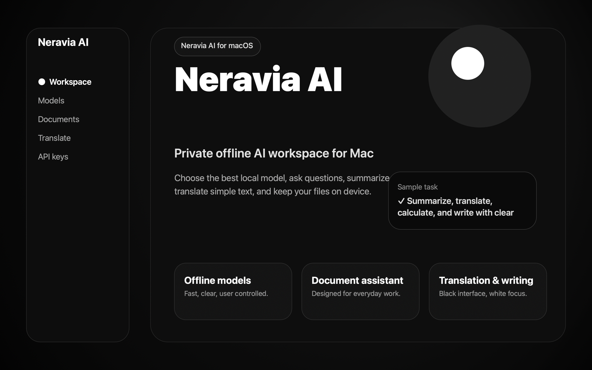
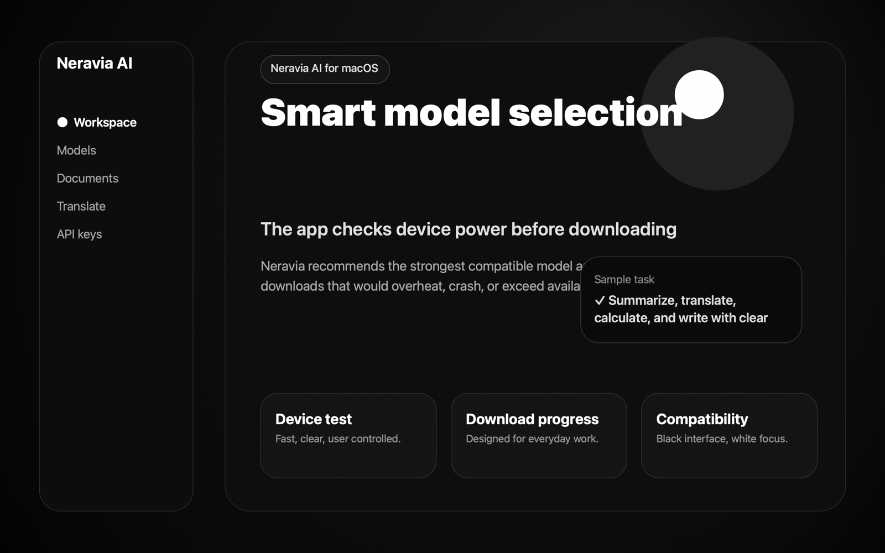

Ask your documents
Import PDF, TXT, Markdown, RTF, JSON or CSV. Neravia retrieves relevant passages locally and shows the source material behind the answer.

PRIVATE · OFFLINE-FIRST · NATIVE FOR MAC
Ask focused questions, translate, summarize, extract facts and write drafts in a calm workspace designed to keep imported files on your device.
No account · No document uploads · Optional local model
WORK WITH INFORMATION, NOT TABS
Neravia brings the tasks that usually scatter across several tools into one restrained native interface.
Import PDF, TXT, Markdown, RTF, JSON or CSV. Neravia retrieves relevant passages locally and shows the source material behind the answer.
Turn long material into a concise brief, translate selected text and extract useful facts without creating an account.
Draft, reshape and organize text in a quiet black-and-white workspace built for concentration.
A CLEAR THREE-STEP FLOW


LOCAL BY DESIGN
Imported documents remain on the device. The core experience does not require a Neravia account or a document-processing server.
FOR HIGH-MEMORY MACS
On compatible devices with at least 10 GB of physical memory, Neravia can download the Bonsai 27B MLX 1-bit model separately for advanced local generation. The model is about 5.16 GB and is never bundled or downloaded without an explicit action.
Performance varies by Mac, available memory, temperature and Low Power Mode. Core document and writing tools remain available when the optional model is unavailable.
FROM THE NERAVIA JOURNAL
A practical look at privacy, device limits and the value of source-aware document work without turning your computer into a black box.
Read the articleAVAILABLE NOW
Start with the core workspace. Advanced local generation remains optional and under your control.